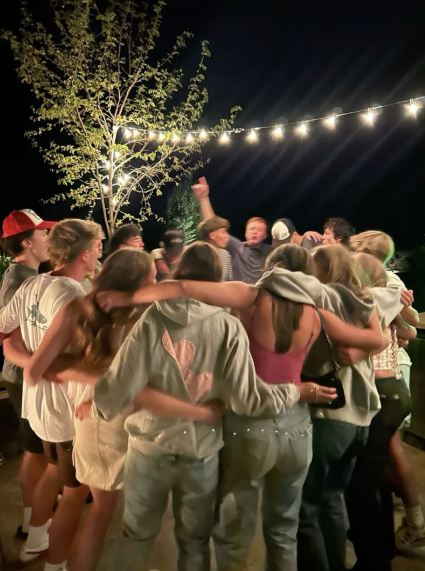
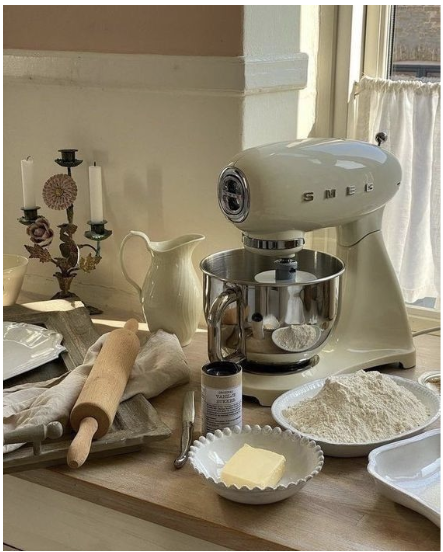

Some of my interests and hobbies are hanging out with my friends, watching movies, listening to music, baking and traveling.
The purpose of this portfoliois to show my growth in computer science and to help others learn more about me.
In this class, I have grown in my knowledge of coding in general and learning how to use HTML and CSS. At the beginning, I stuggled with organizing my code and making my websites look the way I wanted. Over time, I improved my practicing and completing projects like my "Favorite Things" website.
My learning journey started with no coding experience at all. I learned that coding takes patience, practice, and problem-solving, and I improved by not giving up when I ran into problems.